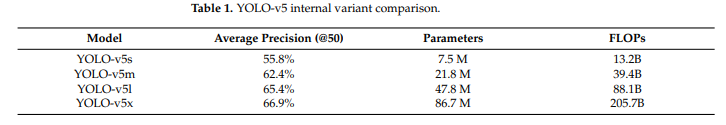

YOLOv5 – Practical Engineering
PyTorch-Native Framework
Shifted from Darknet to PyTorch, dramatically improving accessibility and ease of use.
AutoAnchor & Data Pipeline
Automated anchor optimization and streamlined data loading for faster training.
Model Scalability
Introduced various model sizes (n, s, m, l, x) for different speed-accuracy trade-offs.

Source: Machines (2023), Figure 8
Source: Machines (2023), Table 1